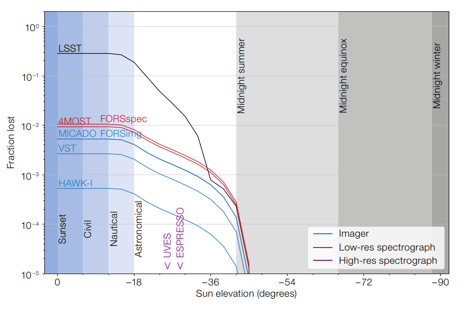

INTRO
PUBLICATIONS
CONTACT
IOA PAGE
This page is intended for me to monitor the latest developments in the increased use of space for commercial use, at the expense of science.
Examples of this include the seemingly unrestricted expansion of Low Earth Orbit satellite constellations, and the use of satellites for billboard advertising, though there are others.
Much as the former will allow greater network connectivity to regions of the globe, the manner in which this is being conducted is now clearly becoming more threatening to scientific observations,
and it would appear that astronomers [and scientists more generally] were not involved in any crucial decisions regarding this.
In my view, the use of space must be guarded for science, and for the use of future generations.
UPDATES

August 10 2021: ESO impact analysis of satellite constellations [Credit: article Fig.3]
"Despite the partial success of recent operator mitigations and some possibilities for introducing regulations to compel operators to coordinate with astronomers and make design changes to satellites, no combination of mitigations can fully avoid impacts on astronomy.
With the possibility of 100,000 satellites launching in the coming decades, the impacts on astronomy are one concern amongst many in this new megaconstellation era (Boley & Byers, 2021).
This large number of satellites in LEO creates a major concern in terms of orbital crowding, collision avoidance and control of debris.
Whilst various space agencies are considering the problem, the existing space governance system is being stretched to its limits".
Full ESO article here

{kind=link}